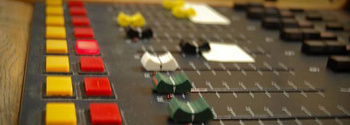
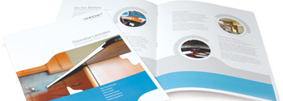

-
The Radio Hyderabad, an emerging media company in Hyderabad offers industry ready training and best-in-class services in creative communication. The Radio Hyderabad believes in creative, simple and thought through training and communication, irrespective of the medium or the form. The Company has expertise in Radio, print, audio-visual, web, multimedia and films. Everyday, many ideas cross our minds and we at The Radio Hyderabad believe that if we can view one such idea with a touch of artistry, it can indeed create waves in the field of art and entertainment. A tough task though, with its own set of challenges especially when reality poses stumbling blocks in paucity of proper channels and resources. However at The Radio Hyderabad, we just think that impossible is possible too.
As a part of our creative practice, we utilize our creative energies and latent talents to their optimum in order to realize and transform the visions that visit us each day.
We at The Radio Hyderabad, aim to use our strengths towards showcasing Andhra Pradesh in an attractive, sleek, modern way which captures the attention of prospective tourists across India and the globe and bring them in for a visit that they shall treasure for life. -
Team The Radio Hyderabad is a homogeneous blend of professionals from all walks of creative field. The Radio Hyderabad employs the best of training faculty and creative talent .The team includes, Radio, Television and Advertising professionals, creative directors, graphic designers, copywriters, public relation officers, research scholars, marketing and sales professionals, animators, sculptor, and photographers. We also have an external panel of consultants from various professions who add value and bring in their subject matter expertise to projects which need special insights and skills.
The team at The Radio Hyderabad can think and work well beyond the set rules and methods that modulate the strings of any art form. And thus the chance of reaching to the pinnacle of success is unlimited, may be even beyond the limits of the lapis lazuli sky.
We share an uncanny resemblance amongst each other in terms of our thoughts and experience and we think, this very semblance, will guide us further to take up new challenges, as we march ahead towards our goal. -
Team The Radio Hyderabad members are immensely experienced and have successfully conceptualized, and worked on some significant projects. To name a few
- 1) 16 CD Rom Presentations for Dept.of Tourism,Govt.of A.P
- 2) Print campaigns & Documentary film on various Govt.schemes during the tenure of Late Sri. Dr.Y.S.Rajasekhara Reddy for Dept. of I & PR
- 3) Department of IT
- 4) Documentary films for Department of Culture,Govt.of A.P
- 5) Campaigns for APSACS
- 6) Print, Web and Multimedia campaigns for many a Corporate & Retail clients
-

What The Radio Hyderabad:
The Radio Hyderabad also offers a wide array of Creative services to cater to the diverse needs of its Clients. Our versatile team is equipped to efficaciously manage the creative functions assigned to us by our clients. The team being a posse of eclectic talents, innovation and originality has evolved to be our fortress. We strictly abide by the deadlines we promise for the completion of our projects never compromising on the quality of creative content in a project. -
Radio Production
Radio Production is a nascent but specialized arena of creative communication that has gained popularity with the corporate world to facilitate their functions more effectively. The Radio Hyderabad offers wide-ranging services in Radio production to its clients. The services include conceptualization, script writing, and production of spots/jingles. -

Corporate Collateral:
The Radio Hyderabad has created corporate collateral for a number of established and upcoming companies. Our designers and content specialists ensure absolute quality at all times. We specialize in designing logos, company brochures and direct marketing collateral for corporate entities. -
ContentServices
As content specialists, we develop, proof-read and edit content for websites and brochures. We study our client's business to understand it thoroughly and then adapt the style of writing to the nature of the business. Also, our content- writing team renders us the advantage of working with a variety of clients with different creative requirements. The content writers at VOICEBIT understand the business jargon and other technical aspects of client business ensuring detailed and comprehensive solutions. Our approach to content writing job is a sum total of our experience, exposure and expertise that enables us to provide our clients with a wide choice of concepts and styles. We definitely go that extra mile to ensure our clients get more than what they are looking for. -
Web Services:
Our web expertise includes building static and dynamic websites of any kind or magnitude. Right from websites to portals involving technical aspects like database management and programming, we have worked in close collaboration with domestic as well as international clients on some significant projects. -
Multimedia:
Our services in multimedia include interactive and linear CD-ROM presentations, and 3D walk-throughs. Right from the conceptualization of the presentation to the filming of the video and final integration of all the elements, our team has the wherewithal to work on a cross-section of industries and products. -
Audio Video Presentation:
Our production team comprises of professionals who have worked on both fiction and non-fiction assignments in the field of television, advertising and cinema. We can carry out production work for any kind of media. Our team includes filmmakers, cinematographers and exceptionally talented technical people in their respective areas. -

Documentaries:
We conceptualize, write, and produce documentary films on a number of social and cultural themes. Creativity cannot be confined hence our functional arena is expansive and offers scope for us to explore. We also undertake production and direction for a number of interesting, innovative themes for short movies. We work in close collaboration with NGOs, non-profit organizations and social youth clubs to promote various national and international causes. We propagate awareness through short films and documentaries. We have been associated with a number of NGOs in the past and have produced short films on issues like HIV/AIDS, street children, traffic sense and other concerns that stare at us in the face. -
In today’s competitive media universe, professional training is a sine-qua-non for any individual looking to make a career in media industry and training is one of the core competencies of The Radio Hyderabad. The Radio Hyderabad offers the best in industry training and the profile of the faculty members speaks volumes about the kind of training a student can expect from the school of training i.e. in-depth, comprehensive and simply put sure-fire training The various courses offered by The Radio Hyderabad aim to make its students industry ready and that is one of the primary reasons for students and amateurs to join in our courses. The Radio Hyderabad provides high quality one-on-one training to its students and our experienced professionals mentor students in honing their skills and give a fillip to their fledgling career in media. At The Radio Hyderabad, our main aim is to turn raw talent into exceptional voice artists, by training them on the latest techniques and technologies, mentoring them with an environment that is conducive to creative learning.
-
6 weeks Courses offered - Certificate course in Radio Jockeying
- Certificate course in Radio Production
- Certificate course in Radio Sound Production
- Certificate course in Creative Writing
- Certificate course in Voice Art
- Certificate course in Video Jockeying
- Certificate course in TV News Anchoring
Classes are commencing from Oct 5th, 2012
Only 15 students per Batch
Weekend classes for corporate employees.